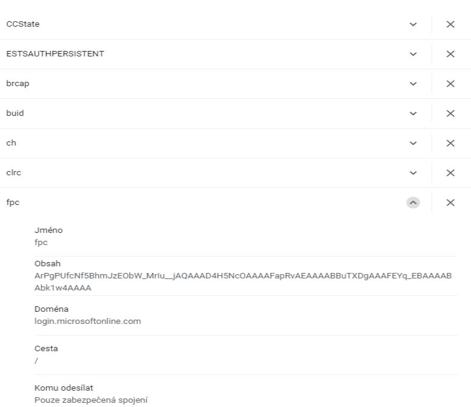

Vznik WWW a principy
World Wide Web (WWW, také pouze zkráceně web), ve volném překladu „celosvětová pavučina“, je označení pro aplikace internetového protokolu HTTP. Je tím myšlena soustava propojených hypertextových dokumentů. Služba se zrodila se v roce 1989 v evropském vědeckém centru CERN v Ženevě díky Timu Berners-Lee.
Za hypertext označujeme takový text, který obsahuje propojení na jiné texty pomocí tzv. hypertextových odkazů. Ve službě WWW jsou realizovány jako tzv. URL odkazy. Služba je založena na spolupráci WWW klientů (browserů) s WWW serverem. Prvním komerčním prohlížečem webových stránek byl na počátku 90. let minulého století Mosaic.
- komunikační protokol HTTP, pomocí něhož WWW klient a WWW server komunikují,
- jazyk HTML , definující formát WWW stránek, které server vrací klientovi.
W3C je mezinárodní konsorcium jehož členové společně s veřejností vyvíjejí webové standardy pro WWW. Konsorciu předsedá Tim Berners-Lee.
Otázky a odpovědi
Server je bezobslužný program, který přijímá a obsluhuje požadavky klientů. Webový server je připojen k počítačové síti a přijímá požadavky v souladu s protokolem HTTTP. Tyto požadavky vyřizuje a počítači, který požadavek vznesl, vrací odpověd
Příklady webových serverů
- Apache
- NGINX
- Microsoft Internet Information Server
Klient (browser, prohlížeč) je program, který komunikuje s uživatelem a na základě jeho pokynů se obrací na jednotlivé servery, získává od nich data a zobrazuje je.
Příklady webových klientů
- Mozilla Firefox
- Google Chrome
- Safari
- Opera
- Microsft Edge
Základem služby WWW je komunikace mezi webovým klientem a webovým serverem pomocí protokolu HTTP. Při jejich spolupráci fungují následující mechanismy:
- komunikační protokol HTTP, pomocí něhož WWW klient a WWW server komunikují
- Jazyk HTML definující formát WWW stránek, které server vrací klientovi
HTTP je internetový protokol určený pro komunikaci s WWW servery. Slouží pro přenos hypertextových dokumentů ve formátu HTML, XML, i jiných typů souborů.
| 1xx | 2xx | 3xx | 4xx | 5xx |
|---|---|---|---|---|
| informační zpráva | úspěšně vyřízení požadavku | problémy spojené s přesměrováním | chyby související s vyřízením požadavku (stránka není dostupná, apod.) | interní chyby serveru |
HTTPS je nadstavba protokolu HTTP, která poskytuje zvýšenou bezpečnost před odposloucháváním či podvržením dat. Standardní port na straně serveru je 443 TCP.
URL, běžně webová adresa je řetězec znaků, který slouží k přesné specifikaci umístění zdrojů informací na Internetu. Nejběžnějším zdrojem je webová stránka
Cookie je krátký textový soubor, který si navštívený web ukládá ve vašem prohlížeči. Umožňuje webu zaznamenat informace o vaší návštěvě. Přiští návštěva tak pro váš může být snazší a web bude užitečnější.
Principiálně vyhledávače fungují ve třech krocích:
- procházení webových stránek
- indexace (příprava indexu)
- poskytování odpovědi na dotazy
HTML je zkratka pro hypertextový značkovací jazyk, který se používá k vytváření obsahu webové stránky. Obsah webové stránky mohou tvořit texty, obrázky, tabulky, multimédia a další prvky. Webové stránky jsou mezi sebou vzájemně propojeny pomocí hypertextových odkazů.
Hypertext je způsob strukturování textu, který není lineární. Obsahuje tzv. hyperlinky neboli česky (hypertextové) odkazy. Rovněž odkazuje i na jiné informace v systému a umožňuje snadné publikování, údržbu a vyhledávání těchto informací.